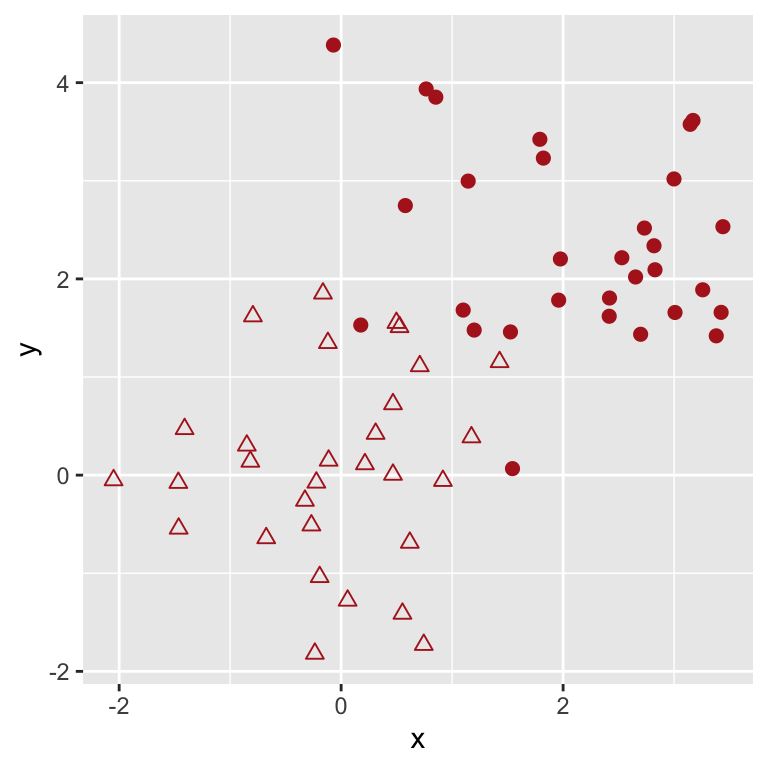
9 Unsupervised Learning
9.1 Introduction
Let’s suppose that someone has conducted an experiment and collected data, comprising…
- \(p\) measurements (recorded in columns of a data frame) for each of…
- \(n\) objects (recorded in rows of a data frame).
Let’s also suppose that we have carried out exploratory data analysis, and that we have found that all the measurements are statistically informative (i.e., we do not need to remove any data frame columns).
If our research goal is to attempt to find structure in the \(p\)-dimensional space of the data, then we are attempting unsupervised learning. “Unsupervised” simply means that none of the measurements is a response variable, i.e., we are not trying to predict the value of a particular measurement given the other measurements.
For instance, TBD…we need an appropriate dataset here.
We can think of unsupervised learning as being an extension of exploratory data analysis.
- In EDA, the goal is to visualize projected data to build intuition and to visually assess potential associations between variables.
- In unsupervised learning, we implement statistical algorithms to uncover potential structure in the data in their native space.
An issue with unsupervised learning is that there are no universally accepted mechanisms for model assessment or selection, i.e., there is not necessarily going to be a unique right answer! (TBD - reword.)
9.1.1 Similarity
Unsupervised learning relies on notions of similarity: how similar or dissimilar are two data? In the wider world of statistics and machine learning, there are many ways to quantify similarity. Here, we will focus on the most intuitive similarity metric, the L2-norm, which is better known as the Euclidean distance: \[
d_{ij} = \sqrt{(X_{i1}-X_{j1})^2 + \cdots + (X_{ip}-X_{jp})^2 \,.
\] Here, \(i\) and \(j\) are the indices for two data (i.e., two rows in a data frame) and \(X_1\) through \(X_p\) represent the \(p\) measurements associated with each datum. To compute pairwise distances in R, we use dist() (which by default assumes the Euclidean distance).
TBD - show dist example
The output is a (symmetric) matrix TBD - lower triangle
Note that if a data frame has more than about 20,000 rows, a computer may not have sufficient memory to store the matrix.
9.1.2 Clustering
Clustering is the partitioning of data into homogeneous subgroups, ones for which the within-subgroup variation is relatively small. Because we know the Euclidean distances between each datum, we can determine the average squared distance between data within defined clusters and compare that to the same measure between all data. If the ratio of the first number to the second number is small, it means that we have found small tight clusters that lie far apart.
What are issues that can arise when we attempt to cluster data?
- There is no guarantee that the data are actually distributed across multiple effectively discontiguous clusters, so unsupervised learning is never guaranteed to generate an “actionable result” or useful “data story.”
- Commonly used clustering algorithms are not applicable to categorical data. However, we will mention some less commonly applied algorithms later.
- In many clustering methods, all data are forced into clusters; this may not be optimal.
Also, the results that we generate from any method that relies on similarities can be impacted by units. (For instance, do the data in the distance column have units of kilometers or millimeters? The contribution to the overall Euclidean distance in the latter case will be much larger than in the former case.) Because of this, it is common practice to standardize (or scale) the data within each column of the data frame: \[
X \rightarrow \frac{X-\bar{X}}{S_X} \,,
\] where \(\bar{X}\) and \(S_X\) are the sample mean and standard deviation of the data, respectively. The mean and the standard deviation of the scaled distribution will be 0 and 1, respectively, but the distribution itself can be narrow (few data that lie far from zero), wide (more data that lie far from zero), or anywhere in between.To standardize data separately in each column of a data frame, we use the scale() function:
df.scaled <- scale(df)(Note that we see standardization in some other analysis contexts we touch upon in this book, like principal components analysis and K-nearest neighbors.)
9.2 The K-Means Clustering Algorithm
The \(K\)-means clustering algorithm is straightforward:
- Randomly assign a number, from 1 to \(K\), to each of the observations. These serve as initial cluster assignments for the observations.
- Iterate until the cluster assignments stop changing:
- For each of the \(K\) clusters, compute the cluster centroid. The \(k^{\rm th}\) cluster centroid is the vector of the \(p\) feature means for the observations in the \(k^{\rm th}\) cluster.
- Assign each observation to the cluster whose centroid is closest (where “closest” is defined using Euclidean distance).
We note that, as previously stated, there is no universally accepted metric that would lead us to conclude that a particular value of \(K\) is the optimal one, and that our results can change from run to run unless we explicitly set a random number seed immediately before calling kmeans().

Below, we generate example data:
These data are sampled from two bivariate normal distributions, one being centered at \((0,0)\) and the other at \((2.25,2.25)\).
What do we observe when we assume that there are two clusters (\(K = 2\))?
km.out <- kmeans(scale(df), 2, nstart=20)
color <- km.out$cluster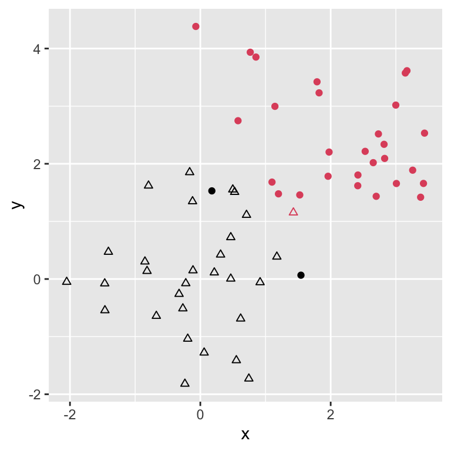
Initially, the algorithm randomly associates data to clusters, and thus there can be some amount of variation in the final results. To mitigate this so as to ensure that the optimal set of clusters is defined, we set the nstart argument in the call to kmeans() to a large number (e.g., 20). (Generally, the algorithm is fast enough that we need not worry about whether setting nstart to a large value will noticeably slow an analysis down.)
km.outK-means clustering with 2 clusters of sizes 31, 29
Cluster means:
x y
1 -0.7512305 -0.7453282
2 0.8030395 0.7967301
Clustering vector:
[1] 1 1 1 1 1 1 1 1 1 1 1 1 2 1 1 1 1 1 1 1 1 1 1 1 1 1 1 1 1 1 2 2 2 1 2 2 2 2
[39] 2 2 2 2 2 2 2 2 2 1 2 2 2 2 2 2 2 2 2 2 2 2
Within cluster sum of squares by cluster:
[1] 23.17382 23.00059
(between_SS / total_SS = 60.9 %)
Available components:
[1] "cluster" "centers" "totss" "withinss" "tot.withinss"
[6] "betweenss" "size" "iter" "ifault" In the output above, we have
- totss: the average squared distance between any one data point and all other data points
- tot.withinss: the average squared distance between any one data point and all other data points in its cluster (we want this to be small relative to
totss) - betweenss is
totss-tot.withinss(we want this to be large relative tototss)
Note that as \(k \rightarrow n\), (between_SS/total_SS) goes to 100%, but 100% is not the goal: we would be overfitting at that point, with each data point defining its own “cluster.”
As mentioned above, there are no universally agreed upon methods for choosing an optimal value for \(k\). But that does not mean there are no methods at all! Ones that are commonly applied include:
the elbow method;
the silhouette method; and
computing the gap statistic
9.2.1 Elbow Method
wss <- rep(NA, 10)
for ( ii in 1:10 ) {
km.out <- kmeans(scale(df), ii, nstart=20)
wss[ii] <- km.out$tot.withinss
}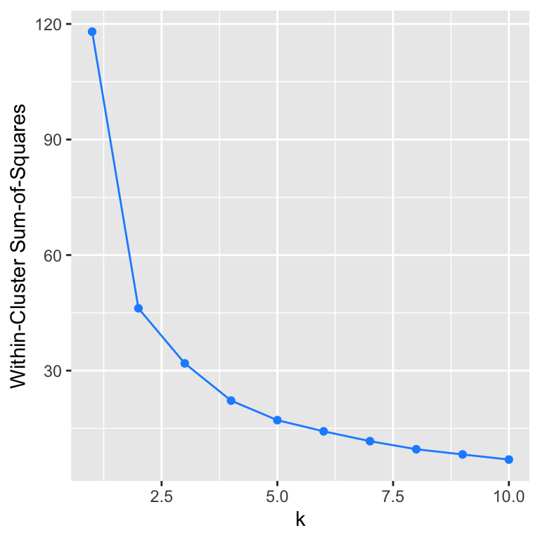
The observed “elbow” is around \(k\) = 2. (Or is it around \(k\) = 3?) Because of this ambiguity, one should avoid using the elbow method if possible.
9.2.2 Silhouette Method
library(cluster)Warning: package 'cluster' was built under R version 4.5.2ss <- rep(NA,10)
for ( ii in 2:10 ) {
km.out <- kmeans(scale(df),ii,nstart=20)
ss[ii] <- mean(silhouette(km.out$cluster,dist(scale(df)))[,3]);
}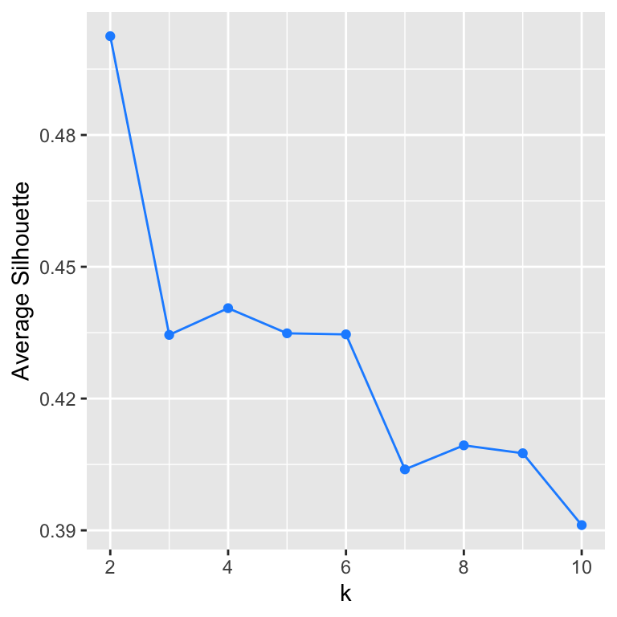
The highest score is for \(k\) = 2, indicating that two clusters is the optimal choice.
9.2.3 Calculating ther Gap Statistic
When we calculate the gap statistic, we are attempting, essentially, to perform on-the-fly hypothesis testing.
suppressMessages(library(factoextra))Warning: package 'factoextra' was built under R version 4.5.2gs <- clusGap(scale(df), FUN=kmeans, nstart=20, K.max=10, B=50)
fviz_gap_stat(gs)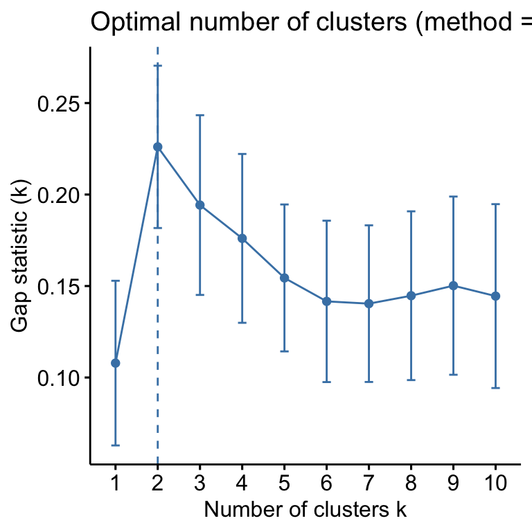
The highest score is for \(k\) = 2, indicating that two clusters is the optimal choice.
9.3 K-Prototypes and K-Modes
If our data have categorical variables, there are two standard options, one for analyzing data that only have categorical variables, and one for analyzing data of mixed types.
- K-modes: we would use this algorithm if our data consist completely of factor variables..an example implementation is
kmodes()inR’sklaRpackage. - K-prototypes: we would use this algorithm if our data consist of a mix of factor and numeric variables. An example implementation is
kproto()inR’sclustMixTypepackage.
Both of these algorithms alter the distance calculation to take into account the categorical nature of the factor variables. One can see more details about, e.g., \(K\)-prototypes in this paper.
9.4 Hierarchical Clustering
The algorithm for hierarchical clustering is, like that for \(K\)-means, straightforward:
- Begin with \(n\) observations and a measure (such as Euclidean distance) of all the \(\binom{n}{2} = n(n-1)/2\) pairwise dissimilarities. Treat each observation as its own cluster.
- For \(i = n, n-1, \ldots, 2\):
- Examine all pairwise inter-cluster dissimilarities among the \(i\) clusters and identify the pair of clusters that are least dissimilar (that is, most similar). Fuse these two clusters. The dissimilarity between these two clusters indicates the height in the dendrogram at which the fusion should be placed.
- Compute the new pairwise inter-cluster dissimilarities among the \(i-1\) remaining clusters.
We begin by treating each observation as comprising its own cluster, and then merging the clusters together. This is “bottom-up” or agglomerative clustering, which has the primary limitation that all clusters lie within other clusters (hence the name “hierarchical”). Note that as in kmeans, we generally standardize the data.
In agglomerative clustering, there is no unique algorithm that dictates how clusters are to be linked, or merged together. Commonly used methods are complete linkage…

…and average linkage…

The output from hierarchical clustering is dubbed a dendrogram; here’s an example, generated using complete linkage from the same data that we defined above to demonstrate \(K\)-means:
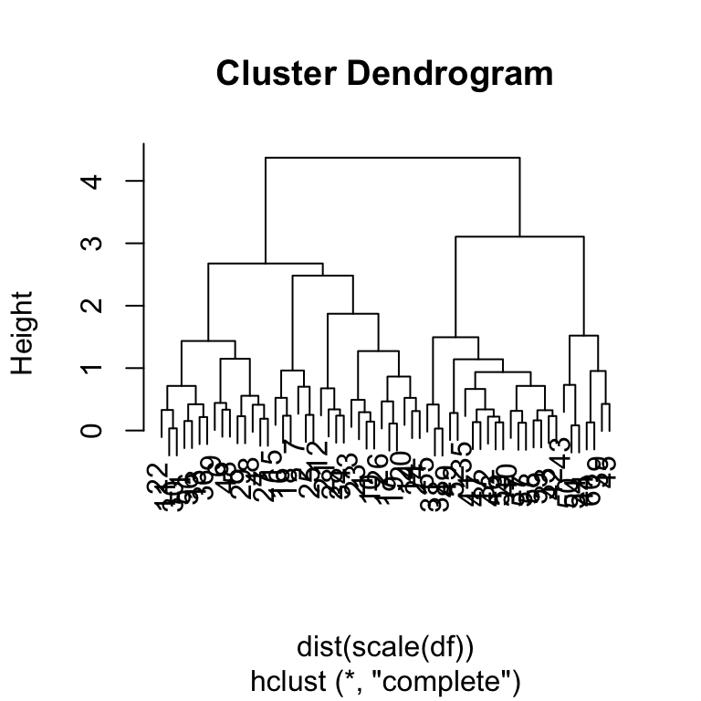
The “height” along the vertical axis at which two clusters fuse indicates dissimilarity…the greater the vertical distance between merge points, the greater the dissimilarity between clusters. The ultimate goal in hierarchical clustering is to select a height at which to cut the tree; for instance, if we assume a height of 3.5, two clusters will be defined; at 3, three clusters; etc. However, we do not as users generally define the cut height; rather, we use variations on the elbow, silhouette, and gap statistic methods to do that work for us.
9.4.1 Elbow Method
suppressMessages(library(factoextra))
#fviz_nbclust(x=scale(df), FUNcluster=hcut, method="wss") # currently returns error9.4.2 Silhouette Method
fviz_nbclust(scale(df), FUN=hcut, method="silhouette")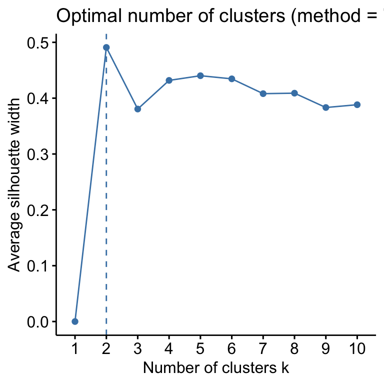
9.4.3 Gap Statistic
library(cluster)
gs <- clusGap(scale(df), FUN=hcut, nstart=20, K.max=10, B=50)
fviz_gap_stat(gs)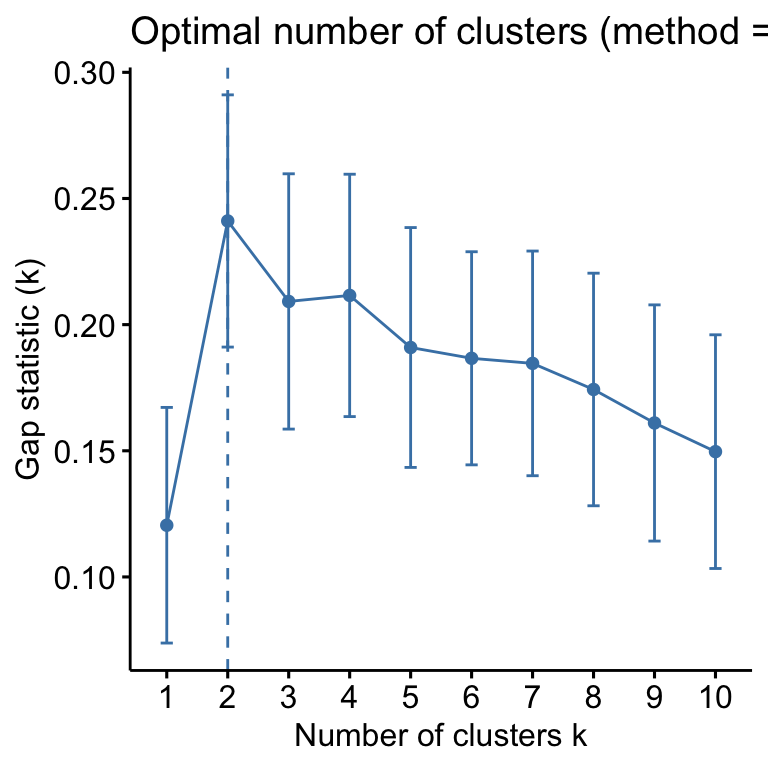
So: should one use \(K\)-means or hierarchical clustering? To answer this, we will quote James et al. (2021): “we recommend performing clustering with different choices of [methods and parameters], and looking at the full set of results in order to see what patterns consistently emerge.” This having been said…
in \(K\)-means, you specify the number of clusters before running the algorithm, as opposed to hierarchical clustering, where you specify the number of clusters afterwards by cutting across a dendrogram;
dendrograms can be really hard to read when the sample size is large; and
all data are assigned to clusters in these algorithms.
9.5 Gaussian Mixture Modeling
Regarding the last point: it may be the case that we do not want to force each datum into a cluster…perhaps some of our data cluster together, but others spread across the data space in a diffuse manner. To deal with situations like this, we might turn to Gaussian mixture modeling, in which we attempt to fit \(n\) multivariate normal (or Gaussian) distributions to our observed data.
Here we will use the ClusterR package to determine the probabilities that a given datum belongs to one of a pre-defined number of Gaussian-shaped clusters. We note a limitation to this model: the Gaussians are diagonal: the longest axis lies along the \(x\) or \(y\) axis, and is not allowed to rotate away from those axes. This is to reduce the complexity of the problem: here we need only find optimal values for the centroids and widths of the Gaussians, as opposed to centroids, widths, and rotation angles.

suppressWarnings(library(ClusterR))
gmm.out <- GMM(df, gaussian_comps=2)
pred <- predict_GMM(df, gmm.out$centroids,
gmm.out$covariance_matrices,
gmm.out$weights)
round(gmm.out$centroids, 3) [,1] [,2]
[1,] -0.076 0.046
[2,] 2.058 2.335round(gmm.out$covariance_matrices, 3) [,1] [,2]
[1,] 0.716 0.936
[2,] 1.097 0.840# ADD ggplot for marginalsnames(pred)[1] "log_likelihood" "cluster_proba" "cluster_labels"TBD: show figure with marginal normals along each axis.
In the output:
log_likelihoodrefers to the natural logarithm of the probability density function values for each datum;cluster_probais a matrix of probabilities: each row represents a datum, and each column the probability that the datum is in that cluster; andcluster_labelsis the predicted cluster…the index of the column with the highest probability for that datum.
Because our data are drawn from two normal distributions, we expect that we should see that they map to one of the two normals in the GMM with high probability. The plot below shows the probability of a datum belonging to cluster 1:
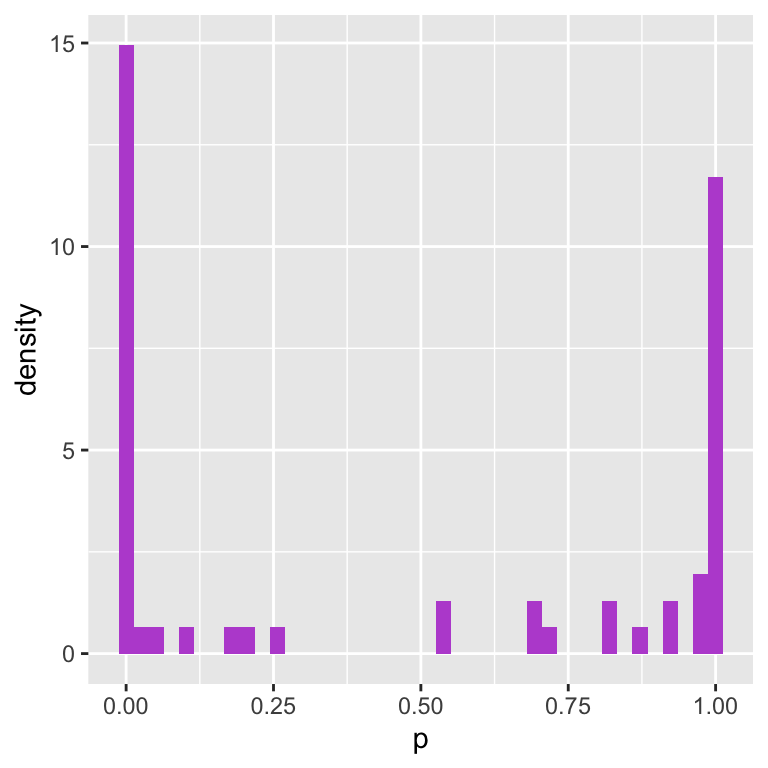
9.6 DBSCAN
In the Density-Based Spatial Clustering of Applications with Noise, or DBSCAN, algorithm, a data point is defined as connected to its neighbors (or is said to be a core point) if there are \(P\) or more data within a distance \(\epsilon\) (with \(P\) and \(\epsilon\) being user-specified parameters). If it isn’t connected to its neighbors, then it is deemed a noise point that does not belong to any cluster.
suppressWarnings(library(dbscan))
Attaching package: 'dbscan'The following object is masked from 'package:stats':
as.dendrogramdb.out <- dbscan(df, eps=0.4, minPts=3)
ggplot(data=df, mapping=aes(x=x, y=y)) +
geom_point(col=db.out$cluster+1)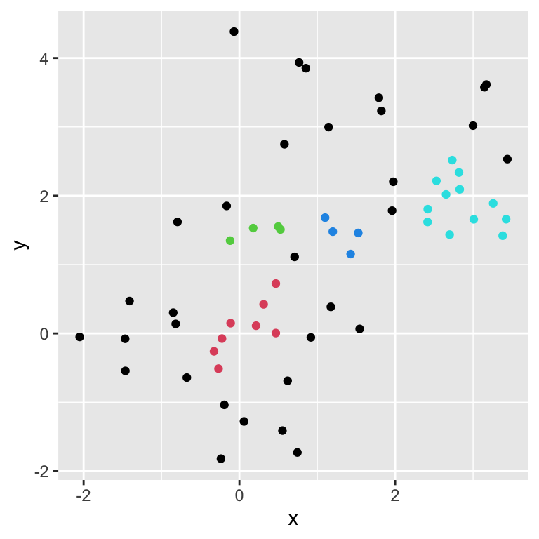
For eps = 0.4, four clusters are identified, with 32 of the 60 data being deemed “noise points” (as shown in black).
db.out <- dbscan(df, eps=0.6, minPts=3)
ggplot(data=df, mapping=aes(x=x, y=y)) +
geom_point(col=db.out$cluster+1)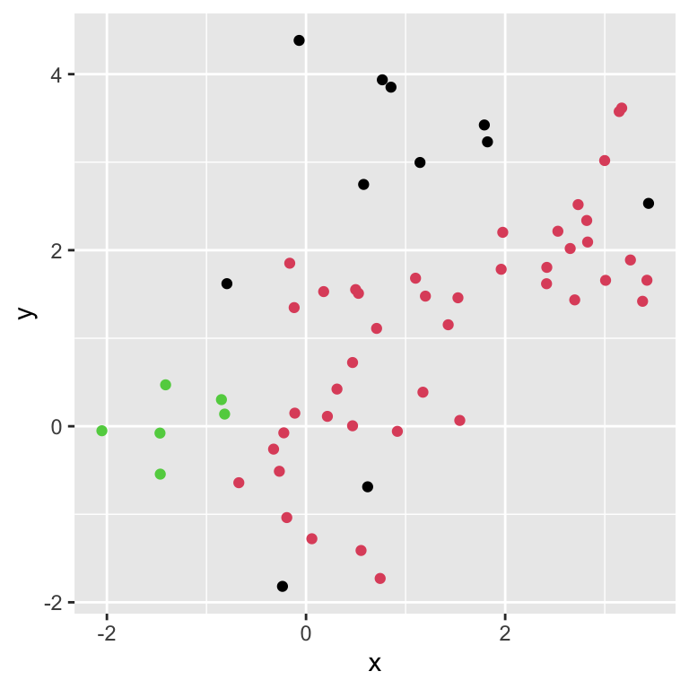
When eps = 0.6, two clusters are identified, with 43 in one, 6 in the second, and 11 noise points.
As we can see, when clusters overlap DBSCAN can have difficulty determining how to partition the data points. So let’s try again; this time, we add two noise points between the (now much more widely separated) clusters.
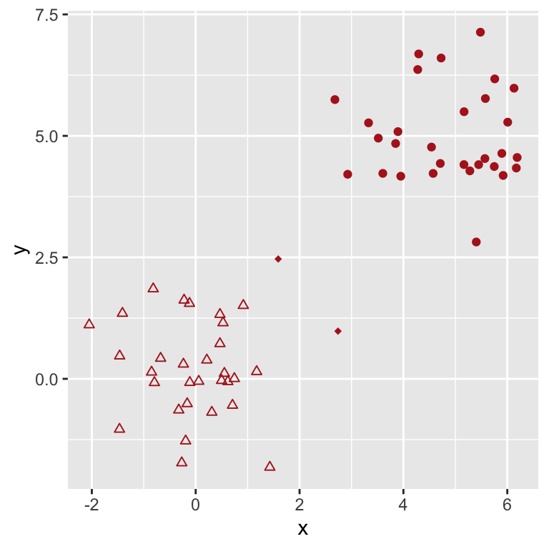
db.out <- dbscan(df.new,eps=1, minPts=3)
ggplot(data=df.new, mapping=aes(x=x, y=y)) +
geom_point(col=db.out$cluster+1)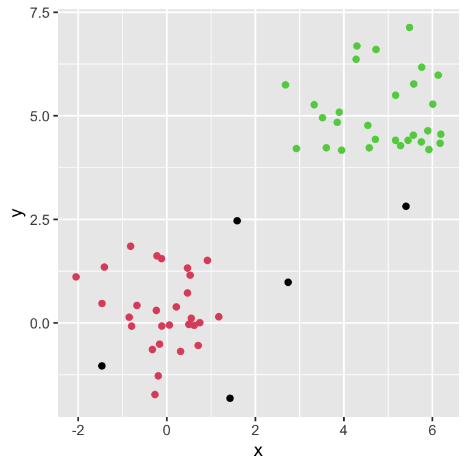
DBSCAN now does a better job at identifying the clusters while leaving the two points in-between (and some other points) as noise points.
DBSCAN allows one to map the coordinates of new data to established clusters.
df.pred <- data.frame("x"=c(0, 3, 6), "y"=c(0, 3, 6))
predict(db.out,newdata=df.pred, data=df.new)[1] 1 0 2The first point, \((0,0)\), is predicted to belong to cluster 1, while the second point, \((3,3)\), is predicted to be a noise point and the third point, \((6,6)\), is predicted to belong to cluster 2.